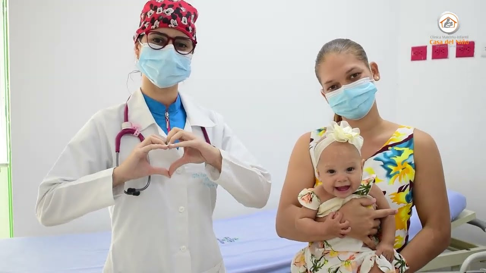
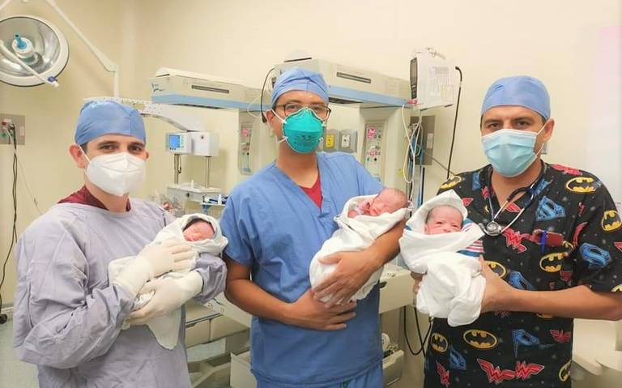

Hace muchos años, en la ciudad de Ecatepec, un grupo de visionarios de la medicina y la educación se unieron para crear una institución que marcaría la diferencia en el cuidado de la maternidad y la infancia. Así nació la Clínica Materno-Infantil "Adame", un lugar donde el amor y la excelencia se fusionan para brindar atención médica y humana sin igual.
La Clínica "Adame" surgió como una extensión del prestigioso Grupo Tecnológico Universitario Ecatepec, con el objetivo de aplicar los conocimientos más avanzados y la investigación médica más actualizada en beneficio de las familias. Desde el principio, el compromiso con la salud y el bienestar de las madres y los niños se convirtió en nuestra razón de ser.
A lo largo de los años, "Adame" ha crecido y se ha consolidado como un referente en el campo de la maternidad y la pediatría. Nuestro equipo de profesionales altamente calificados y apasionados trabaja incansablemente para brindar un cuidado integral, desde el embarazo hasta la adolescencia, velando por la salud y el desarrollo de cada niño y niña que confía en nosotros.
En la Clínica Materno-Infantil "Adame", cada sonrisa de un nuevo nacimiento, cada pequeño logro en el desarrollo de un niño y cada abrazo de agradecimiento de una madre nos impulsa a seguir adelante. Nuestro compromiso con la excelencia médica y el calor humano nunca se detiene, y nuestra historia continúa, escribiendo nuevos capítulos de esperanza y salud para las familias de Ecatepec y más allá.

En la Clínica Materno-Infantil "Adame", nuestra misión es ser el centro de referencia en el cuidado integral de la maternidad y la infancia, ofreciendo servicios médicos de alta calidad con un enfoque humano y cálido. Nos comprometemos a brindar un entorno seguro y confiable donde las madres y los niños se sientan apoyados en cada etapa de su desarrollo, promoviendo la salud y el bienestar de toda la familia.
Nuestra visión es ser reconocidos como el líder en la atención materno-infantil en la región, destacando por la excelencia médica, la innovación tecnológica y la calidez en el trato humano. Aspiramos a ser el punto de encuentro donde la experiencia y la ciencia se unan para brindar un futuro más saludable y prometedor para todas las familias que confían en nosotros.
Compromiso: Estamos dedicados a la salud y el bienestar de nuestros pacientes y sus familias, manteniendo un alto nivel de responsabilidad y entrega en cada aspecto de nuestra labor.
Respeto: Tratamos a cada individuo con respeto, empatía y compasión, reconociendo la diversidad y las necesidades únicas de cada persona que atendemos.
Excelencia: Buscamos la excelencia médica en cada procedimiento y tratamiento, respaldados por una constante actualización en conocimientos y tecnología de vanguardia.
Integridad: Actuamos con honestidad, ética y transparencia en todas nuestras acciones, manteniendo la confianza y la credibilidad en nuestra institución.
Innovación: Abrazamos el espíritu innovador en la medicina, adoptando nuevas tecnologías y enfoques que mejoren la calidad de vida y la salud de nuestros pacientes.
Cercanía: Nos acercamos a las familias con calidez y amabilidad, proporcionando un trato humano que genere confianza y seguridad en cada etapa de su recorrido con nosotros.
En la Clínica Materno-Infantil "Adame", nos esforzamos por ser más que un centro médico, un lugar donde las sonrisas se contagian, los sueños se protegen y la vida florece en su máximo esplendor.